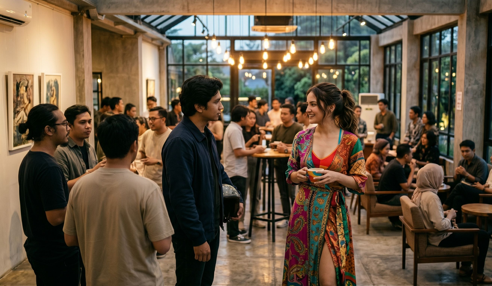
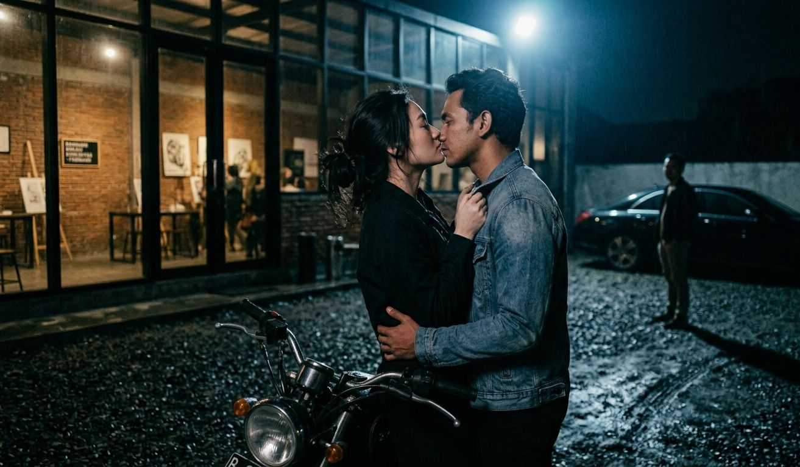

Bandung di bulan Februari selalu memiliki cara tersendiri untuk mengaburkan batasan antara realitas dan melankolia. Udara dingin yang turun dari arah Lembang tidak pernah sekadar fisis; ia merayap masuk ke dalam sela-sela kognisi, memicu semacam retrospeksi mendalam tentang keputusan-keputusan yang kita ambil atas nama afeksi. Malam itu, di sebuah ruang komunal yang tersembunyi di balik rimbunnya pohon-pohon jalan Dago, sebuah ekosistem kecil sedang berdenyut. Komunitas itu diisi oleh para pemikir, kreator, dan jiwa-jiwa urban yang lelah dengan kepalsuan metropolitan, namun tetap membawa residu intelektualnya ke mana pun mereka pergi.
Gue melangkah masuk ke dalam ruangan bernuansa industrial-minimalis tersebut tanpa ekspektasi masif. Sebagai seorang pendatang baru yang skeptis terhadap dinamika sosial, kehadiran gue di sana murni untuk mencari stimulus visual baru bagi proyek arsitektur batin gue. Namun, ruang memiliki gravitasinya sendiri, dan malam itu, gravitasi tersebut berpusat pada satu koordinat yang presisi: Tessa.

Dia sudah eksis di sana, jauh sebelum gue memahami regulasi tidak tertulis dari lingkaran sosial tersebut. Tessa adalah definisi hidup dari konsep effortless charisma. Di tengah kerumunan yang sibuk mendebatkan teori estetika modern dan mengumbar istilah-istilah literally atau which is khas subkultur urban metropolitan yang bertransmigrasi ke Bandung, dia berdiri dengan ketenangan seorang kurator ulung. Ketika pandangan kami pertama kali bersinggungan di antara kepulan asap rokok artifisial dan denting cangkir porselen, ada sebuah anomali psikologis yang terjadi. Itu bukan sekadar kontak mata kasual. Itu adalah sebuah penatapan yang menembus filter defensif gue. Di tengah distorsi kebisingan ruangan, tatapan Tessa mengisolasi gue. Ada rasa yang mendadak terdisosiasi dari nalar—sebuah ketertarikan mentah yang menuntut atensi penuh.
Perkenalan kami tidak terjadi di depan publik. Kami sama-sama memahami bahwa interaksi superfisial di tengah kerumunan hanya akan mereduksi kedalaman potensi yang ada. Malam itu juga, sebuah pesan singkat di platform privat mengantarkan kami ke sudut teras luar yang sepi, menghadap ke arah lampu-lampu kota Bandung yang berkelap-kelip di kejauhan bagai hamparan berlian yang tumpah.
"Gue perhatiin lo dari tadi cuma berdiri di dekat pilar, kayak lagi melakukan observasi antropologis terhadap kami yang fana ini," kata Tessa membuka konversasi, suaranya memiliki tekstur rendah yang menenangkan, berbalut aksen urban yang kental namun terdengar sangat terdidik.
"Gue cuma lagi mencoba mencerna lanskapnya," jawab gue, mencoba tetap defensif secara intelektual. "Menarik melihat bagaimana orang-orang di sini merekonstruksi identitas mereka melalui bahasa dan pilihan kopi."
Tessa terkekeh, sebuah kepatuhan instan terhadap sarkasme gue. "Intrigued, right? Tapi lo sendiri gak bisa lari dari fakta kalau lo sekarang bagian dari ekosistem ini, basically. Gue Tessa." Dia mengulurkan tangannya. Sentuhan pertamanya terasa dingin secara temperatur, namun mengalirkan sebuah impuls elektrik yang langsung mengonfirmasi spekulasi awal gue: perempuan ini berbahaya bagi stabilitas emosional gue.
Bulan-bulan berikutnya berubah menjadi serangkaian lintasan memori yang intens di sepanjang geografis Bandung. Pertemuan demi pertemuan terjadi seperti sebuah simfoni yang disusun secara matematis namun dimainkan dengan improvisasi liar. Kami menghabiskan malam-malam panjang berdiskusi tentang esensi eksistensialisme di kedai kopi kecil daerah Ciumbuleuit, berjalan menyusuri trotoar Braga saat rintik hujan mulai menyentuh aspal kuno, hingga berdiam diri menikmati kabut yang turun di daerah rindang di utara kota.
Benih cinta itu tidak tumbuh secara perlahan; ia meledak dalam keheningan. Rasa rindu hadir dalam bentuknya yang paling absolut dan melelahkan. Ketika gue tidak bersama Tessa, pikiran gue mengalami cognitive overload, dipenuhi oleh proyeksi tentang apa yang sedang dia lakukan, apa yang dia pikirkan, dan bagaimana struktur senyumnya terbentuk saat dia menemukan sesuatu yang lucu. Itu adalah sebuah keterikatan emosional yang intens, sebuah kondisi di mana logika gue mulai bernegosiasi dengan delusi romantisme.
Namun, dalam setiap arsitektur hubungan yang dirancang dengan rapi, fondasi yang retak akan selalu mengirimkan getaran peringatan. Sering kali, ketika gue mencoba mengeksplorasi kejujuran emosional—ketika gue mencoba mengartikulasikan bahwa perasaan ini telah melampaui batas persahabatan intelektual—gue menangkap adanya sebuah tembok transparan yang dibangun oleh Tessa. Dia tidak benar-benar dilanda asmara dengan intensitas yang sama. Logika analitis gue mulai membaca pola-pola yang mengkhawatirkan. Pendekatan Tessa kepada gue terasa sangat terhitung, berorientasi pada aspek pragmatis dan pemenuhan kepentingan jangka pendek.
Gue menyadari bahwa bagi Tessa, gue adalah representasi dari stabilitas mental. Gue adalah orang yang bisa dia ajak berdiskusi tentang konsep-konsep rumit, tempat dia mencari validasi atas pemikiran-pemikirannya yang liar, dan sosok yang selalu ada ketika realitas dunianya menjadi terlalu bising. Namun, di balik semua kedekatan itu, ada sebuah kekosongan romantis yang sengaja dia pelihara untuk gue. Dia melihat gue secara fungsional, bukan emosional secara esensial.
Puncak dari disonansi kognitif ini terjadi pada suatu sore yang berawan di kawasan Dago Atas. Tessa meminta gue menemaninya ke sebuah ruang pameran seni kontemporer, sebuah tempat yang awalnya gue pikir akan menjadi ruang komplementer bagi romansa kami. Namun, kalkulasi gue meleset total. Setibanya kami di sana, fokus Tessa langsung terdistraksi sepenuhnya. Tujuan utamanya mendatangi tempat itu bukanlah untuk mengapresiasi instalasi seni, bukan pula untuk menikmati eksistensi gue di sampingnya. Dia ke sana untuk menemui seorang pria lain—pria yang, dari informasi yang dia sampaikan tanpa beban, baru beberapa hari lalu dia kenal melalui jejaring sosial digital.
Gue berdiri di sana, di antara lukisan-lukisan abstrak yang seolah menertawakan kenaifan gue, menyaksikan Tessa berinteraksi dengan pria itu dengan flirtasi yang begitu natural. Naluri berburunya tidak pernah disembunyikan. Ini adalah bagian yang paling mematikan dari dinamika kami: Tessa memiliki kejujuran yang brutal tentang keliarannya. Dia tidak merahasiakan hasratnya untuk mencari perhatian dari pria-pria baru yang dia anggap memiliki social currency atau daya tarik visual sesaat.
Bahkan, dengan tingkat kepolosan yang manipulatif, dia menoleh ke arah gue di tengah pameran itu dan berbisik, "Menurut lo, dia gimana? Like, personality-wise, kelihatan menjanjikan gak buat di-explore lebih jauh? Gue butuh second opinion dari lo yang punya intuisi tajam."
Pertanyaan itu terasa seperti sebuah bedah medis tanpa anestesi pada ego gue. Namun, kecerdasan gue menolak untuk runtuh dalam bentuk kemarahan impulsif. Gue menatap matanya, mencari retakan di balik pesonanya, dan menjawab dengan ketenangan teatrikal, "Secara visual, dia memenuhi standar estetika generik lo. Tapi secara substansi, dia kelihatan seperti bab pertama dari buku yang bakal lo bosan baca di bab ketiga. But go ahead, lo kan selalu suka dengan fase eksplorasi yang berisiko."
Waktu terus bergerak mengikuti ritme kota Bandung yang kadang lambat namun pasti. Naluri berburu Tessa akhirnya menemukan pelabuhan sementaranya. Dia tertambat pada seorang pria bernama Adrian, sosok yang tampaknya memiliki semua instrumen pragmatis yang Tessa cari selama ini: status sosial, ambisi linier, dan kemampuan untuk mengimbangi gaya hidup urbannya. Mereka menjalin komitmen resmi untuk bersama. Di fase ini, gue diposisikan sebagai penonton di barisan paling depan, menyaksikan sebuah drama romantis yang fana.
Namun, sebuah hubungan yang dibangun di atas fondasi kalkulasi pragmatis dan ketertarikan superfisial jarang memiliki daya tahan terhadap guncangan realitas. Tak butuh waktu lama bagi ego mereka untuk saling bertabrakan. Terjadi ketidakcocokan masif dalam beberapa hal mendasar—mulai dari prinsip kebebasan individu hingga bagaimana mereka mendefinisikan masa depan. Konflik demi konflik meletus, menciptakan siklus toksik yang melelahkan bagi Tessa. Mereka akhirnya memutuskan untuk berpisah sementara, sebuah jeda yang sengaja diciptakan untuk memberi ruang bagi keraguan.
Dan di sinilah plot cerita ini mencapai titik baliknya yang paling krusial. Di tengah badai domestik dengan pasangannya, Tessa kembali mencari pelabuhan lamanya. Dia menghubungi gue, meminta pertemuan privat di sebuah kafe berkonsep glasshouse yang terisolasi di sudut rindang jalan sepi di Bandung, dikelilingi pohon-pohon besar yang menjatuhkan daun-daun kering di atas atap kaca.
Sore itu, hujan baru saja reda, menyisakan aroma petrichor yang pekat dan hawa dingin yang menusuk tulang. Tessa duduk di hadapan gue dengan segelas latte yang sudah mendingin. Riasan wajahnya minimalis, menyiratkan kelelahan psikologis yang nyata. Tatapannya kembali mengisolasi gue, seperti malam pertama kami bertemu, namun kali ini ada keputusasaan yang menggelayut di sana.
"Gue capek, Ray," ucapnya lirih, menyebut nama gue untuk pertama kalinya dengan intonasi yang begitu rapuh. "Sama Adrian, semuanya terasa kayak negosiasi bisnis yang gak pernah selesai. It's so draining, literally."
"Lo yang memilih untuk masuk ke dalam ruang negosiasi itu sejak awal, Tessa," jawab gue, mengaduk teh hitam gue tanpa minat. "Gue rasa lo udah tahu konsekuensi dari mengeliminasi variabel emosional demi hal-hal yang sifatnya pragmatis."
Tessa menatap gue dalam-dalam, matanya berkaca-kaca, merefleksikan sisa-sisa cahaya senja Bandung yang mulai meredup. Dia memajukan posisinya, memperkecil jarak fisik di antara kami. "Kalau gue minta kita balik ke awal... gak, maksud gue, kalau gue minta lo untuk jadi pendamping gue yang sebenarnya, lo mau? Kita lupakan Adrian. Kita lupakan semua distorsi yang pernah ada. Gue mau berkomitmen sama lo, Ray. Gue sadar, cuma lo yang benar-benar paham isi kepala dan jiwa gue."
Sebuah tawaran yang, jika diucapkan beberapa bulan lalu, akan menjadi jawaban atas semua doa dan rindu yang menyiksa malam-malam gue. Namun, kecerdasan dan martabat batin gue telah berevolusi melewati titik kenaifan tersebut. Gue melihat tawaran ini bukan sebagai wujud cinta murni, melainkan sebagai keputusan pragmatis lainnya dari seorang Tessa yang sedang panik mencari stabilitas emosional di tengah kegagalannya dengan Adrian. Gue adalah opsi penyelamatan, bukan pilihan utama dari sebuah hasrat yang tulus.
"Tawaran yang sangat menarik, Tessa," kata gue dengan senyum tipis yang sarat akan makna pelepasan. "Sebuah kalkulasi yang matang di saat lo lagi berada di titik nadir. Tapi maaf, gue menolak."
Tessa tertegun, matanya melebar, tidak mempercayai bahwa pria yang selama ini menjadi pengagum rahasianya dalam diam bisa mengucapkan kata penolakan dengan begitu artikulatif. "Kenapa, Ray? Lo gak sayang lagi sama gue? Rasa itu gak mungkin hilang gitu aja, which is gue tahu banget gimana lo ke gue selama ini."
"Rasa itu masih ada, Tessa. Tapi respek gue terhadap diri gue sendiri jauh lebih besar daripada rasa sayang gue ke lo," ucap gue tenang. "Dan untuk membuktikannya, gue udah melakukan sesuatu sebelum gue datang ke kafe ini."
Gue mengeluarkan ponsel gue, memperlihatkan sebuah pesan singkat. Gue telah mengundang Adrian untuk datang ke kafe ini, tepat di jam yang sama. Logika gue mendikte bahwa konfrontasi ini harus diselesaikan secara absolut, tanpa menyisakan ruang untuk ambiguitas di masa depan.
"Lo mengundang Adrian ke sini? Lo gila, Ray?!" bisik Tessa dengan nada panik yang tertahan.
"Gue gak gila. Gue cuma mengembalikan alur cerita ke jalur yang seharusnya," jawab gue tepat ketika pintu kafe terbuka dan sosok Adrian melangkah masuk dengan wajah tegang.
Adrian mendekati meja kami dengan langkah ragu, namun gestur tubuhnya menunjukkan dominasi yang terluka. Gue berdiri, menyambutnya dengan jabat tangan yang kokoh, mengeliminasi semua ketegangan fisik yang tidak perlu. Kami bertiga kini duduk dalam sebuah konfigurasi psikologis yang rumit namun mengesankan. Sebuah segitiga emosional yang siap diledakkan oleh logika.
"Gue gak paham maksud lo ngundang gue ke sini, Ray," kata Adrian, suaranya berat, matanya melirik Tessa yang kini membuang muka ke arah jendela kaca.
"Sederhana, Adrian," kata gue, mengambil kendali penuh atas narasi di meja tersebut. "Tessa baru saja menawarkan sebuah pilihan untuk melarikan diri dari konflik kalian berdua dan menggunakan gue sebagai pelabuhan barunya. Tapi gue di sini untuk menyatakan secara eksplisit bahwa gue menolak untuk menjadi bagian dari pelarian itu. Gue meminta kalian berdua untuk tetap bersama, untuk menyelesaikan apa yang sudah kalian mulai."
Tessa menoleh tajam ke arah gue, kemarahan dan kekecewaan bercampur aduk di matanya. Namun, ada juga kilatan kekaguman yang tersisa atas keberanian gue meruntuhkan permainan manipulasinya. Adrian tampak terchekat, ego maskulinnya mendadak ditenangkan oleh kejujuran absolut yang gue tunjukkan.
"Kalian berdua memiliki kecocokan dalam hal-hal yang kalian anggap penting untuk masa depan kalian—status, ambisi, dan cara kalian melihat dunia secara eksternal," lanjut gue dengan nada bicara yang mirip seorang filsuf yang sedang membacakan putusan akhir. "Ketidakcocokan yang kalian hadapi sekarang hanyalah fase adaptasi dari dua ego yang sama-sama keras. Selesaikan itu. Jangan biarkan ketakutan akan kegagalan membuat kalian menghancurkan komitmen yang udah dibangun."
Keheningan yang pekat melanda meja kami. Hanya terdengar suara rintik hujan sisa sore yang mengetuk atap kaca dengan ritme monoton. Tessa menatap Adrian lama, lalu kembali menatap gue. Dia menyadari bahwa pintu bagi gue telah tertutup rapat, dikunci dari dalam oleh sebuah martabat intelektual yang tidak bisa dinegosiasikan.
Dengan helaan napas panjang, Tessa akhirnya menatap Adrian dan berkata dengan suara yang kembali tenang, mengadopsi narasi berbobot yang baru saja gue susun, "Mungkin Ray benar, Adrian. Kita emang harus bersama. Karena orang paling cerdas yang pernah gue kenal baru saja menyatakan itu dengan sangat mutlak. Kita gak punya alasan lagi untuk lari dari satu sama lain."
Adrian mengangguk, sebuah penerimaan yang melegakan mengalir di wajahnya. Proses rekonsiliasi mereka terjadi secara instan di depan mata gue, difasilitasi oleh penolakan gue yang terhormat. Gue tersenyum, berdiri dari kursi, dan meletakkan beberapa lembar uang di atas meja untuk membayar minuman gue. "Pertemuan ini selesai. Gue harap kalian menemukan apa yang kalian cari."
Kami bertiga bergerak meninggalkan kafe tersebut. Senja Bandung telah sepenuhnya runtuh, digantikan oleh malam yang pekat dengan lampu-lampu jalan yang mulai memantulkan cahayanya di atas aspal yang basah. Udara dingin berembus kencang saat kami tiba di area parkir kendaraan yang sepi.

Adrian berjalan lebih dulu menuju mobilnya, memberikan ruang bagi sebuah perpisahan terakhir. Namun, apa yang terjadi berikutnya adalah sebuah tindakan teatrikal yang akan mengunci memori ini selamanya dalam sejarah hidup gue. Tessa tidak langsung menuju mobil Adrian. Dia melangkah cepat ke arah gue yang sedang berdiri di dekat motor gue.
Tanpa peringatan verbal, di bawah temaram lampu merkuri area parkir dan tepat di depan mata Adrian yang menyaksikannya dari kejauhan, Tessa meraih kerah jaket gue. Dia menarik tubuh gue mendekat, dan mengecup bibir gue dengan kehangatan yang begitu intens, sebuah kecupan yang sarat akan rasa rindu yang tertahan, penyesalan yang mendalam, dan pengakuan atas kekalahannya terhadap prinsip gue. Itu adalah sebuah ciuman perpisahan yang teatrikal, sebuah penandaan teritorial terakhir sebelum pelepasan absolut yang emosional.
Gue tidak membalasnya dengan keliaran, melainkan menerimanya dengan ketenangan seorang pria yang tahu bahwa ini adalah akhir dari sebuah babak yang panjang. Ketika dia melepaskan tautannya, ada air mata yang akhirnya jatuh di pipinya. Dia menatap gue untuk terakhir kalinya, sebuah tatapan yang merangkum semua rasa yang pernah terjalin di antara kami di bawah langit Bandung.
"Selamat goodbye, Ray. Lo tetap jadi plot twist terbaik dalam hidup gue," bisiknya.
Dia berbalik, melangkah menuju mobil Adrian tanpa menoleh lagi. Mobil itu perlahan bergerak meninggalkan area parkir, lampunya membelah kegelapan malam hingga akhirnya menghilang di balik tikungan jalan Dago. Gue memakai helm, menyalakan mesin kendaraan, dan merasakan angin malam Bandung menerpa wajah gue. Rasa sedih itu ada, namun ia berbaur dengan sebuah kebebasan eksistensial yang luar biasa. Kami telah berpisah untuk selamanya, meninggalkan sebuah cerita yang selesai dengan komposisi yang matang, cerdas, dan bermakna mendalam di persimpangan jalan di senja Bandung.